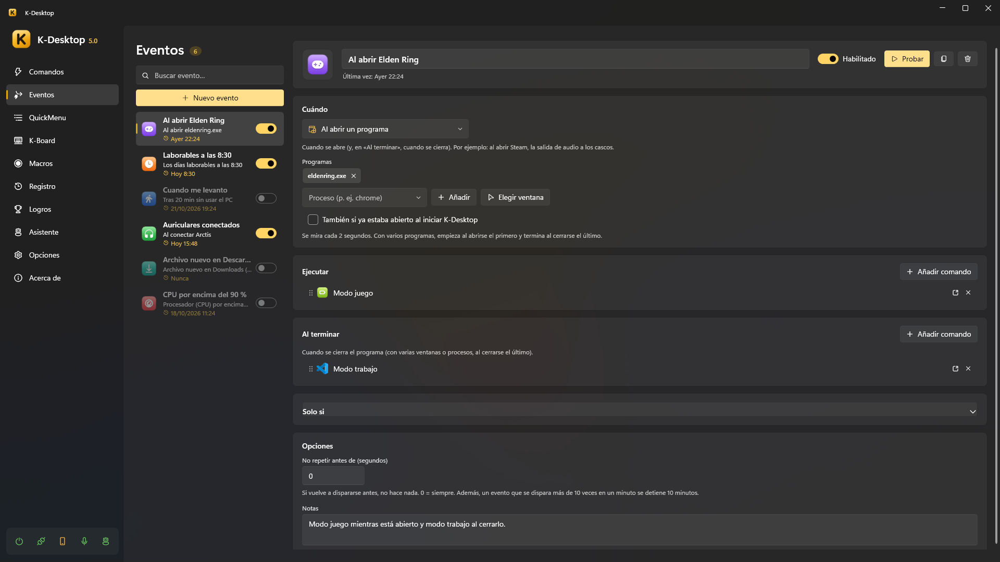

Eventos
Un evento es «cuando pase esto, ejecuta estos comandos». Cada evento tiene un disparador, condiciones si quieres y los comandos que ejecuta; muchos disparadores tienen además una parte «Al terminar» (el programa se cierra, vuelves al PC, se quita el dispositivo…) con sus propios comandos.

Disparadores
| Disparador | Cuándo |
|---|---|
| Al iniciar K-Desktop / Al salir de K-Desktop | Lo que antes era «Ejecutar al iniciar / al salir» en cada comando |
| A una hora | Todos los días o algunos días de la semana, a la hora que digas; o un solo día, si le pones Día |
| Cada cierto tiempo | Cada N minutos mientras K-Desktop está abierto |
| Al abrir un programa | Cuando se abre; «Al terminar», cuando se cierra. Al abrir Steam, el sonido a los auriculares |
| Programa en primer plano | Cuando su ventana pasa a primer plano, y cuando deja de estarlo |
| Sin usar el PC | Tras unos minutos sin teclado ni ratón; «Al terminar», cuando vuelves |
| Bloquear, suspender… | Cuando la sesión se bloquea o desbloquea, o el PC se suspende o se despierta |
| Batería o corriente | Cuando un portátil pasa a batería o vuelve a la corriente |
| Nivel de batería | Cuando la batería baja de un % (o sube de él); «Al terminar», cuando vuelve al otro lado |
| Amanecer o atardecer | Al amanecer o al atardecer donde estás, o unos minutos antes o después (la hora se calcula en el PC; Ver hoy enseña la de hoy). Sin lugar: «Dónde estás» de las opciones del asistente o la ubicación de Windows |
| Archivo en una carpeta | Cuando un archivo aparece (en cuanto deja de crecer), cambia, se borra o se renombra. Los comandos reciben su ruta en {archivo} |
| Pantalla conectada o desconectada | Cuando enchufas o quitas un monitor o la tele (también una tele enchufada que aún no se usa); los comandos reciben su nombre en {pantalla} |
| Llamada desde fuera | Cuando otro equipo, Home Assistant o un script lo pide por su nombre, por UDP o por la web |
| Unidad conectada | Cuando se conecta un USB, un disco o una tarjeta (y cuando se retira) |
| Red | Al conectarse a una red (o a cualquiera), o al quedarse sin red |
| Dispositivo conectado | Cuando se conecta un mando, teclado, auriculares o un aparato USB (y cuando se desconecta) |
| Uso del equipo | Cuando el procesador, la gráfica, la memoria o la memoria de la gráfica (VRAM) pasan (o bajan) de un % durante un rato |
| Dispositivo de audio | Cuando se conectan unos auriculares, un altavoz o un micrófono, o uno pasa a ser la salida o la entrada predeterminada |
| Cita del calendario | Unos minutos antes de una cita, al empezar o al acabar. Ver Calendario |
| Llega un correo | Cuando llega un correo a una de tus cuentas, y puede guardar sus adjuntos. Ver Correo |
| Llega un mensaje de Telegram | Cuando llega uno tuyo o de un contacto al bot o a la cuenta. Ver Telegram |
Opciones
- Comandos: Añadir comando elige comandos que ya tienes; Nuevo comando crea uno oculto con el nombre del evento, lo añade y lo abre para que le pongas las acciones.
- Pedir a un asistente: después de los comandos, le pide algo a un asistente como si se lo dijeras tú (Mira el tiempo y mándamelo por Telegram). Si no está en el escritorio, no se hace.
- Solo una vez: el evento se borra después de ejecutarse (si tiene comandos en Al terminar, después de esos). Con A una hora y un Día, sirve para «el viernes a las 9, una sola vez».
- Programados por un asistente: lo que le pides para más tarde («a las 7 vacía la papelera», ver Herramientas) sale aquí como un evento más, con quién lo programó y lo que aprobaste al pedírselo. Puedes cambiarlo o borrarlo como cualquier otro.
- Condiciones (Solo si): una lista con las mismas condiciones que la acción Si… (horario, un programa abierto, la red, la batería, el uso del equipo…), cada una con Al revés. Con varias eliges si tienen que cumplirse todas o basta con alguna. Cada una se puede apagar sin borrarla y probar (▶) para ver si se cumple ahora. Sin ninguna, el evento salta siempre.
- No repetir antes de: si vuelve a dispararse antes (en segundos), no hace nada.
- Protección contra bucles: un evento que se dispara más de 10 veces en un minuto se detiene 10 minutos, y K-Desktop te avisa.
- Cada evento se puede apagar, y ejecutar a mano para probarlo (Probar, o
KDesktop.exe --event "Nombre"). El botón del rayo crea un comando que lo ejecuta (para darle un atajo o una frase de voz). - Cuándo, Solo si y Opciones se pliegan; Solo si sale abierto cuando tiene algo. Las horas y las fechas se ponen con las flechas, la rueda o escribiéndolas (la fecha también con su calendario).
Lanzar un evento desde fuera
El disparador Llamada desde fuera salta cuando llega una llamada con su nombre. No importan las mayúsculas ni los acentos.
UDP: event puerta (puerto 2501, «Control remoto» encendido)
HTTP: POST http://<PC>:2502/api/event
X-KD: 1
Authorization: Bearer <token>
{"name": "puerta"}
Por UDP necesita Opciones → Control remoto encendido con Eventos permitido (y la clave, si tiene, desde otro equipo); por la web, el dispositivo tiene que estar emparejado (ver Móvil y control remoto).